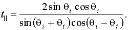

Theory of Reflection and Refraction
1. DescriptionConsider two homogeneous nonmagnetic media, which have a planar interface. The "incident" medium occupies the half-space y > 0 and has index of refraction . The "transmission" medium occupies the half-space y < 0 and has index of refraction . In this module the reflection and refraction of monochromatic electromagnetic plane waves at this interface is investigated. For simplicity only the electric field (and not the magnetic field) is considered.
2. CalculationsIn order to be succinct, we will assume in this section that the incident electric field is linearly polarized. The results we will obtain for this case can be adapted to treat waves that are in other polarization states.
Let be the incident wave vector, and let be the angle of incidence (see figure below).
The incident electric field can be written as
where
Here is the component of that is perpendicular to the plane of incidence, is the component of  that is parallel to the plane of incidence, is the wavelength of the light in the incident medium, and w
is the angular frequency of the light. is a unit vector in the direction of the propagation vector of the incident wave.
that is parallel to the plane of incidence, is the wavelength of the light in the incident medium, and w
is the angular frequency of the light. is a unit vector in the direction of the propagation vector of the incident wave.
Let be the wave vector of the reflected wave. The reflected electric field can be written as
where
Here is the component of  that is perpendicular to the plane of incidence, is the component of that is parallel to the plane of incidence, and is a unit vector in the direction of the propagation vector of the reflected wave.
that is perpendicular to the plane of incidence, is the component of that is parallel to the plane of incidence, and is a unit vector in the direction of the propagation vector of the reflected wave.
Let be the wave vector of the transmitted wave. The transmitted electric field can be written as

where
Here is the component of that is perpendicular to the plane of incidence, is the component of  that is parallel to the plane of incidence, and is a unit vector in the direction of the propagation vector of the transmitted wave. is the angle of transmission (or refraction) and is related to
that is parallel to the plane of incidence, and is a unit vector in the direction of the propagation vector of the transmitted wave. is the angle of transmission (or refraction) and is related to  by Snell's law.
by Snell's law.
Let us define the amplitude reflection coefficients for the perpendicular and parallel components of the electric field as, respectively,
Let us define the amplitude transmission coefficients for the perpendicular and parallel components of the electric field as, respectively,
The four amplitude coefficients can be calculated from the following four formulas (the Fresnel equations),


Created by
Srihari Angaluri
and Kiril Vidimce
Send comments to comments@webtop.org